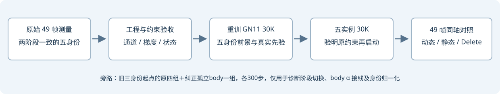

R15：旧五身份基线工程验收与重跑
当前“旧 GN11 30K＋五实例30K”未通过工程与编辑质量验收，保留为历史诊断结果。不能据此断言原算法不行，也不能把旧三身份静态层里的完整车辆当作干净道路真值。
快照时间：2026-10-18T22:15:07+08:00。已有三模型同步动态／静态／Delete视频 · 修复R15 4K三维页。

当前已确认什么
| 级别/状态 | 项目 | 实际证据 | 处理 |
|---|
| 优先修复 | 两阶段身份集合不一致 | 已确认：GN11只有旧3身份；a6/a37到实例阶段才加入，canonical前景覆盖0/45418和0/555950像素。 | 从原始测量重训五身份GN11，再接同一五身份实例阶段；不再直接沿用旧3身份GN11当正式五身份起点。 |
| 继承性阻塞 | 原 raw-body α 约束被替换 | 原生 DrivingEditor 与 GN11有100×孤立动态body α整图MSE；刚体适配中权重设0，换为100×可见ID α均值，遮挡语义不同。 | 单独恢复原项做短实验；明确是恢复原约束，不能把添加新损失与修工程混写。 |
| 已纠正短测定义 | 先前body控制臂接线仍是可见union | 实际five_raw_body只恢复了权重100，state仍指向dynamic_visible_alpha。此前“恢复孤立body”的描述无效；前四臂记录的opacity项都是可见union MSE。 | 旧臂及检查点保留，改列为可见union控制；另排five_raw_body_isolated 300步，只换成renderer真实孤立dynamic_alpha并登记状态域。 |
| 继承性阻塞 | 固定拓扑与原增密/剪枝不同 | 刚体适配固定点拓扑；配置里存在原增密和大点剪枝参数，不代表实例阶段实际调用。a6旧5最大σ约3.29米。 | 逐项列出原方法、GN11及刚体适配的实际调用/梯度/生效阶段；未闭合前不得称完整原生方法。 |
| 继承性核对 | 原生剪枝也有阶段边界 | 原配置>500起每100步且<15000调用，点数上限也参与门控；大点判据在3000后启用。契约化世界尺度要用scene.cameras_extent及世界中心，不能用初始化为1的spatial_lr_scale或Actor局部中心代替。 | 恢复调用必须保留实际调度与坐标语义；不能把“原方法有剪枝”扩大成全程保证没有大点。 |
| 显式适配差异 | SH升阶与相机采样 | GN11读取2000步SH升阶，实例写死1000；GN11每49帧无放回采样，实例每步有放回随机。旧3/旧5共享这些设置。 | 纳入正式配置取舍；这些差异本身不能解释3→5的新增退化，也不能混称GPU通道错误。 |
| 比较混杂 | 身份均值从3变5 | 100×mean_K导致每身份系数100/3→100/5，降低40%。这不是通道索引算错。 | 单独测试五身份100×5/3，保持其余损失不变。 |
| 本次排除 | 第二批身份通道串线或断梯度 | 实际CUDA：五身份2批/5批、换序、单ID参考及union通过；真实107/128/137前向一致，128逐ID梯度通过。 | 保留原始receipt；合成五身份均有非零opacity梯度，真实128的a5不可见零梯度明确保留。 |
| 本次排除 | 静态渲染适配数值错误 | 49帧原生静态renderer与适配器最大RGB差约2.4e-7。raw128恶化确实出现在旧5参数中。 | 检查无额外GT mask乘图；保留native/GN11/旧3/旧5逐帧原尺寸图。 |
| 撤回误判 | 背景学习率10倍错误 | 较早本地快照曾导致误判；实际旧5归档train在调度后补乘0.1，实际调用路径4节点验收通过。 | 不是本次已证实故障，不往新实验里混入一个虚构的学习率修复。 |
原约束证据：原生动态body α损失；原生增密/剪枝及优化路径。当前系统应称“GN11＋刚体身份适配”，不能省略这些差异称为完整原生复现。
阶段输入逐像素审计 · 实际CUDA通道与梯度 · 实际学习率调用路径 · 49帧native静态渲染对照
已安排的有限实验
原四组各300步已完成，合计1200步。另补纠正接线的孤立body控制300步，总诊断训练上限1500步；seed0、相同旧GN11起点、原30K学习率时间表、固定拓扑、完整49帧。它们用于因果诊断，不是新正式基线。原GN11/旧3/旧5/R15及修复4K检查点均保留。
| 诊断臂 | 身份数 | raw-body α权重 | ID α均值权重 | 唯一比较目的 |
|---|
| three_replay | 3 | 0 | 100 | 复核原三身份路径 |
| five_replay | 5 | 0 | 100 | 复核当前五身份路径 |
| five_raw_body（旧命名） | 5 | 100，可见union | 100 | 实际仅加入可见union α约束，不能当孤立body恢复 |
| five_ID_weight | 5 | 0 | 166.6667 | 只恢复与旧3相同的每ID系数 |
| five_raw_body_isolated | 5 | 100，孤立body | 100 | 纠正后的原始孤立body α控制；与five_replay相比只恢复此项 |
短实验状态：PILOTS_COMPLETE_AWAITING_LOSS_RESTORE_AND_QUALITY_REVIEW。新正式GN11队列：MATCHED_FIVE_GN11_30K_RUNNING。
正式基线重新从原始测量训练GN11 30K，两阶段使用相同五身份二值域。已完成CPU实际49相机、0.1米尺度、SGCM地面拟合及掩码一致性检查；五组真实LiDAR先验为21358／15193／2444／11625／98452点。后续五实例30K需先核对原约束继承、损失梯度和Adam/RNG恢复，不会直接复用当前有争议的约束接法。
掩码来源透明：a5/a26/a18沿用旧真实标签，a6/a37沿用此前核对过的原生SAM3完整提议；不是R15融合三值或已训练参数。480×320标签最近邻扩展给原1920×1280读取器，并严格验证回到训练分辨率后五身份逐像素一致，没有新增高分辨率测量。
原四臂历史合同与源码hash（body域更正见下） · 五身份一致输入receipt · 短实验状态 · 正式两阶段队列状态
实际进度与更正后的验收队列
五身份一致GN11：16000/30000，状态 training。该数字来自原生训练状态快照，不是完成或质量通过。
后续队列：WAITING_FOR_ACTIVE_MATCHED_GN11_NO_GPU_ACQUIRED。等当前GN11释放GPU后，顺序完成纠正孤立body 300步、两臂真实损失梯度及恢复检查、五臂全49帧分支/独立资产/逐身份删除。恢复检查只在独立审计副本执行共6次更新，不计入训练、不回写检查点。正式新实例更新仍为0。
实际两阶段坐标变换最大差0、时间最大差1.11×10⁻¹⁶，49帧身份与二值union一致。框软损失在归一化坐标的平方域计算，.1尺度使数值为米平方的.01倍；这是损失尺度说明，不能单凭此认定坐标转换错误。
实际GN11与实例绑定 · 逐项原约束／适配调用矩阵 · body控制更正合同 · 后续有限队列 · 原生GN11状态快照 · 审计更新代码CPU绑定检查（未代表GPU通过）
静态点同一参数行追踪：不是所有点一起变大
三套静态点数均为915840，保留全部原点、无拓扑重排的实际合同支持逐行比较。以GN11 raw128时中心落在a6/a37真实框内的静态点固定选择空间区域，追踪同一批参数到旧3和旧5。此处不是Actor资产归属，也未覆盖全部跨框支撑。
| 固定诊断区域 | 静态点数 | GN11 σ中位/m | 旧3 σ中位/m | 旧5 σ中位/m | 旧3单点最大尺度比 | 旧5单点最大尺度比 |
|---|
| a6 初始空间区域 | 494 | 0.238 | 0.223 | 0.138 | 1.97 | 28.03 |
| a37 初始空间区域 | 12827 | 0.113 | 0.105 | 0.051 | 2.79 | 7.52 |
σ为最大轴尺度；比值相对同一GN11原始参数行。多数区域点缩小与少数点极端放大可以同时发生，不能把蓝白条带简单归为整体尺度爆炸，也不能据中心位于车框就把道路点转成车。全场景尺度还受距离契约化影响，大σ不自动等于坏点。
只读真实贡献追踪队列：WAITING_FOR_REGISTERED_REVIEW_NO_GPU_ACQUIRED。将在已登记工程复核之后，核对GN11/旧3/旧5在raw107、128、137的a6/a37车身与下部区域：用原生rasterizer的颜色梯度得到逐Gaussian αT，并与实际alpha和未截断RGB求和配平；另核对原生静态RGB参数梯度。全部零训练更新，结果尚未用于宣称原因或质量通过。
完整CPU静态参数统计 · 零更新贡献追踪状态
300步实际通路诊断
以下都是step300、raw91。前四臂opacity日志名字虽含raw_body，实际张量是全场景可见union，不能据此判断孤立body约束。三身份与五身份监督域不同；不同权重的总loss不能排序为算法优劣。全49帧与恢复另有排队检查。
| 臂 | 实际opacity域 | 该域 α MSE（未加权） | ID α MSE（均值） | 静态RGB原始损失 |
|---|
| three_replay | 全场景可见union | 0.002348 | 0.000815 | 0.011647 |
| five_replay | 全场景可见union | 0.013686 | 0.002813 | 0.011115 |
| five_raw_body | 全场景可见union | 0.008718 | 0.002759 | 0.012648 |
| five_ID_weight | 全场景可见union | 0.011056 | 0.002274 | 0.011628 |
实际结果与域更正receipt。撤回此前“已恢复原孤立body且MSE下降”的解释；原数据仍保留。任何一项MSE降低都不等于道路或资产干净。
正式比较前的验收门槛
- 实际使用源码、二进制、身份顺序、坐标尺度、帧号、训练与显示图像域全部可追溯。
- 原生约束按实际调用、有效域、归一化、梯度和作用参数逐项对照；有意改动单独登记，不混入工程修复。
- 检查点恢复必须覆盖静态/实例/环境、Adam、采样器及Python/NumPy/Torch/CUDA RNG。中断先查已用步数，不盲目重跑。
- 同49帧五目标的动态、静态、逐身份独立资产与删除前后共同验收；报告真实米下的中心/支撑外溢、保体、静态车形和道路细节。
- 训练loss有限、框外率降低或脚本完成，都不等于资产干净。旧3是复现控制，不是干净道路GT；整体重建分数也不能替代删除检查。
工程门槛是有限范围的证据，不宣称“所有工程问题已经排完”。同一训练窗口，无独立编辑GT；human_verdict=null。浏览器file://自动验收受到安全策略限制，本页只记录真实图像、媒体与JS检查，不冒称浏览器操作已通过。